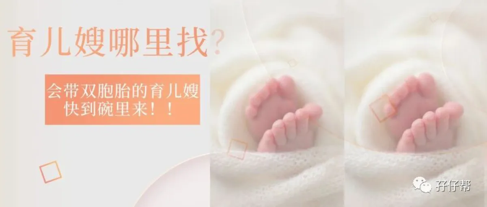
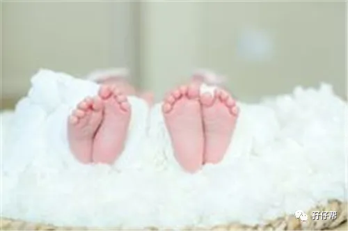
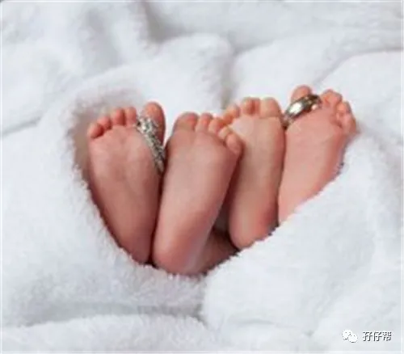

文|圆圈妈，一个文思如尿崩的双胎妈妈
图|来自网络，如有侵权，请联系删除
· 正 · 文 · 来 · 啦 ·
网上有一个段子，说的是一位妈妈辅导学渣儿子做功课，儿子成绩上去了，她也拿到了教师资格证。
因此，当我拿到育婴师资格证时，特别想发表下获证感言。
感谢孖仔帮，感谢所有关注孖仔帮的父母们，没有你们的“苦苦相逼”，我估计不会去考一个跟自己半毛钱关系都没有的证书。
基于公号后台常有人咨询家有双胞胎如何请育儿嫂？今天的推文，我会以一位育婴师和双胞胎妈妈的身份跟大家一起探讨下。
【01】
你遇到的不是育儿嫂，
很有可能是南郭先生
有人说，当白领，做生意不如做育儿嫂，读大学不如直接去家政公司来的收入高…只要管好小婴儿，一个月就能轻松月入过万，于是，全民掀起考育儿嫂证的热潮…
事实上呢，经历过这次育婴师培训后，我得出的结论是：证书易拿，能力却不易达！
我亲眼看见一个同期培训的学员，培训课上睡了一天，试题本一片空白，实操考试时，还把道具娃娃摔地上，居然合格了，拿证了！
甚至培训讲师在课堂上也暗示，考试时要声音洪亮，有模有样，即便真的忘记操作要领，偷瞄下其他人的做法，做做样子，考官基本上不会太为难你！
…实在无力吐槽！
育儿嫂的水平参差不齐！主要是考一个育婴师证书没难度！纵容了很多投机取巧的人！
这个证，拿证门槛低，培训机构为了保证通过率，会给你考纲题库，考前划重点，考核时也相对宽松，只要你愿意花时间看书做题，上培训课，基本上都能通过！
可见，育儿嫂的能力资质在哪个层次，大家应该都心知肚明了！
咱今儿个不讨论这个证几斤几两，只关注在如此鱼龙混杂的背景下，如何请一个靠谱的育儿嫂？
以下是3点小提示，来自一个刚拿到育婴师证书的双胞胎妈妈。
1，证书，要看！
虽然证书无卵用，但从证书上却可以读出很多信息，帮你过滤掉那些滥竽充数的人。
这个证书有两种：
一种是民间组织的，由某些协会和当地劳动机构组织培训颁发的行业证书。
一种是国家级的，由国家人力资源和社会保障部核发全国统一的职业资格等级证书，这是可以申请国家补贴的。
🔼证书样板如图所示🔼
国家级育婴师资格证书的含金量会高很多，考证要求相对严格，有学历和从业经验方面的限制，报考门槛相对较高！
我考的是国家级的，在网上可查实到， 考前还对比过民间机构举办的育婴师培训，该招生老师宣称考育婴师很简单，没啥要求，是个人都可以考，交钱就行了，加入会员还能包工作安排。
说到这，你该知道怎么初步筛选了吧？
只要证书不是国家级的，那基本上可以PASS掉了！（特殊情况除外，比如那人正好是你家某亲戚，或者是经验特别丰富…你不CARE有没有证）
2，实操，要看！
这育儿嫂到底行不行，有没有经验，除了基本的面试环节，最简单粗暴的办法就是实操！
让她演示如何指导母乳喂养，如何正确冲调奶粉，如何给小婴儿洗澡，如何与小婴儿互动交流，遇到异物卡喉如何家庭急救等…
可跟对方商量试用几天，期间多观察，多留心眼，多参考，多对比。
观察两宝宝在育儿嫂的照顾下，是否精神愉悦？
观察育儿嫂在宝宝出现状况时，是否反应迅速，是否操作到位？
观察育儿嫂的为人做事，是偷工减料还是脚踏实地，是油嘴滑舌还是兢兢业业？
透过多方渠道，了解育儿嫂的来龙去脉（身体是否健康，有没有什么传染病等…），相关从业经验，要是能联系上她的上家雇主就最好了。
当你对她的做法提出质疑时，育儿嫂表现出继续为自己辩解还是会虚心采纳你的建议？
凭你做母亲的自觉和女人天生的第六感，试用几天下来，育儿嫂是徒有其表还是真材实料，你基本上会有自己的判断。
3，眼缘，要看！
与我同期参加培训考证的学员中，有女大学生，有孕妇，有准奶爸，也有大妈大婶级别的…
我不知道她们都基于什么目的来考证，我只想说，如果她们都上岗应聘，可能都会被我否决掉！
我知道她们的证书是真的，实操也很棒，但我就是不喜欢这个人，我就是觉得跟这个人不搭！
养育双胞胎很讲究团队合作，如果这个育儿嫂不合你口味，或者跟你处不来，那只会给自己添堵！
你晓得啦，雇主和月嫂，育儿嫂吵架撕逼的新闻比比皆是…
因此，当一个有证书有能力的育儿嫂站在你面前时，千万不要太激动，请认真跟她唠嗑下家常，套下近乎，交流下育儿观念，找找跟此人谈话时，有没有“来电”的感觉！
眼缘的东西，不好说！可能是一个动作，一个眼神，一个微笑…就决定你们之间是否有下文！
众多事实证明，如果这个育儿嫂总是喜欢用所谓的经验凌驾于你，请让她哪里凉快哪里去！
【02】
你才是小主，
才是宝宝们心中最靠谱的育儿嫂
为了预防你被育儿嫂欺负，建议你也去考这个证！
证书还是其次，主要是的确能学到东西，将来照顾两孩子用得上，不至于被育儿嫂糊弄得一傻一愣。
考前有教材+培训课等多种渠道供你自主学习，尤其是线下培训课，特别实用，有资深高级育婴师手把手教你如何对婴幼儿的饮食、睡眠、动作技能、智力开发、社会行为和人格发展进行教育训练。
总之，培训完后，我才发现自己当了回“假妈妈”。
若你有心学习，绝对不会比育儿嫂差，你甚至还能持证上岗，从事育儿嫂工作，实现养娃事业两不误。
即便没打算靠这个证吃饭，时刻让自己保持学习的状态，通过学习充实自己，扩大自己的社交圈子，也能让作为全职妈妈的你增色不少！
“知己知彼，方能百战不殆”
前面提到面试育儿嫂，想要找到合适人选，你得知道她可以做什么，应该做什么。
经历过考证过程，你会更清楚育儿嫂的工作内容和职责及其能力范畴，面试时，基本上一眼就能看出此人靠不靠谱，实际带娃规不规范，科不科学。
因为，你也是练过的，有两下子的！是否在你能力之上，用眼神过几招便知！嘿嘿！
【03】
双胞胎家庭请育儿嫂的常见问题
列举双胞胎育儿群经常提到的关于请育儿嫂的问题，说说我的个人看法！
Q1:育儿嫂请一个还是两个？
A:建议请一个，两个育儿嫂分工比较难把握，界限太清晰或者太模糊都不好控制。
倘若两育儿嫂关系不好，甚至暗自较劲，各自带一个，全程0交流，那样两宝宝就没有互动了，这显然违背了你的初衷！
Q2：育儿嫂必须有带双胎经验吗？
A：这个不是必须条件！当然，有此类经验最好，但可能价格相对较高哦！
有些虽然没有带双胞胎的经验，但是从业多年，育儿理念也与时俱进，各方面也无可挑剔，若此人在早产儿护理方面经验颇丰，确实不可多得，对于家有双胞胎早产儿的家庭来说，岂不是正中下怀？
Q3:育儿嫂一人带双胎，要双倍工资吗？
A：不一定！看你的坐标和两宝宝的情况。
若双胞胎是早产儿，存在一些喂养困难，相对比较难带，多加钱也无可厚非，若在一线城市，育儿嫂的资质能力和要求薪资也相应入乡随俗，自然会有底气要价高一些。
港真，育儿嫂若能一人同时搞定俩娃，不用你操心，那即便是双倍价格，也值！养育双胞胎的双倍辛苦，若能用双倍价格去等量代换，那睡着了也会偷笑！
Q4:面试育儿嫂，要问什么？
A:会提出这个问题的人，主要是不知道自己需要什么！
每个家庭的情况不一样，对育儿嫂的要求也不尽相同，先搞清楚自己的需求很关键。
评估自己的状况，了解自己的局限，把对育儿嫂需要做的工作内容列个清单，这样，你就清楚自己想要什么了。
面试时问啥都可以，反正别照搬网上的面试题就行！可以问对双胞胎了解多少，提出一些养育双胞胎常见问题与对方交流探讨…
找一个合适的育儿嫂很费劲，尤其是找一个要带双胞胎还要很靠谱的育儿嫂，这种几率不亚于你不小心生了对双胞胎。
还有啥疑虑？欢迎留言区说出你的烦恼，也可入群跟有经验的宝爸宝妈们一起探讨！
-END-
今日互动话题
#你家请育儿嫂了吗？感觉怎样？#
评论区聊一聊呗！
一好文推荐一
一加入社群一
一关注孖仔帮一
觉得此文有点意思嘛？？请点“在看”


